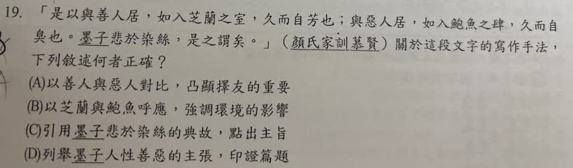

分享原卷｜第19題
完整原題
作答所需文章／材料
是以與善人居，如入芝蘭之室，久而自芳也；與惡人居，如入鮑魚之肆，久而自臭也。墨子悲於染絲，是之謂矣。 ——《顏氏家訓・慕賢》關於這段文字的寫作手法，下列敘述何者正確？
(A) 以善人與惡人對比，凸顯擇友的重要
(B) 以芝蘭與鮑魚呼應，強調環境的影響
(C) 引用墨子悲於染絲的典故，點出主旨
(D) 列舉墨子人性善惡的主張，印證篇題
先想一想，再查看答案、解說與原圖
原卷作答：B（補拍近照另有鉛筆訂正A）
正確答案：A，以善人與惡人對比，凸顯擇友的重要。
逐項解析
| 選項與原句 | 判讀 | 句意與判斷理由 |
|---|---|---|
| (A) 以善人與惡人對比，凸顯擇友的重要 | 應選 | 善惡、香臭正反對照，具體說明交友對品格的影響。 |
| (B) 以芝蘭與鮑魚呼應，強調環境的影響 | 不選 | 環境影響雖是內容之一，但此處主要手法是對比，不是選項所說的呼應。 |
| (C) 引用墨子悲於染絲的典故，點出主旨 | 不選 | 染絲典故用來佐證已說出的道理，非首次提出主旨。 |
| (D) 列舉墨子人性善惡的主張，印證篇題 | 不選 | 染絲是環境薰染的譬喻，不是墨子提出人性善惡理論。 |
詳細說明與解題步驟
【完整白話】
所以，與善良的人相處，好像進入充滿香草蘭花的房間，久了自己也染上香氣；與不好的人相處，好像進入賣鹹魚的店，久了自己也沾上臭味。墨子看見染絲而感嘆，說的就是這個道理。
【寫作手法】
善人與惡人、芝蘭的香與鹹魚的臭，是正反對比，用具體環境說明朋友會影響品格，故A正確。
B雖有提到環境影響，但把一正一反的芝蘭與鮑魚說成呼應，沒有準確指出此段的對比手法。C引用染絲典故是在佐證前面的道理，不是到典故才第一次點出主旨。D墨子感嘆白絲隨染料變色，是在說環境薰染，不是提出人性善惡的論說。
居在此是相處；肆是店鋪；鮑魚在古文此處指鹽漬魚，不是現代餐桌上的鮑魚。是以是因此，是之謂矣就是說的正是這個道理。
辨別對比與呼應，要看兩種事物在此形成的作用；本文用香臭、善惡的差異凸顯擇友，不能只因兩句結構相似就判成同義呼應。
核對註記：已依原卷或完整文字核對並獨立解題；對應教材課次未確認，歸綜合。
原圖（僅本題）
